В предыдущей статье “Современные технологии обхода блокировок: V2Ray, XRay, XTLS, Hysteria и все-все-все” было рассказано про прокси-протоколы. Теперь настало время рассказать про клиенты: консольные, GUI для десктопа, для мобильных платформ и пару слов про OpenWRT.
Надеюсь, что эта статья вам окажется полезной, потому что, как выяснилось, найти хороший клиент даже для тех же V2Ray/XRay в наше время не так-то просто. Потому что большая часть того, что находится при поиске в интернете “в лоб” и даже в списках типа Awesome V2Ray - или уже неподдерживаемое, или довольно кривое, или не умеющее в актуальные версии и фичи (например, XTLS и uTLS), а самые жемчужины прячутся где-нибудь в глубинах Github’а и аппсторов.
Но для начала хочу обратить внимание на ряд нюансов и терминов, которые можно встретить в описании и интерфейсах разных клиентов.
uTLS, XTLS, Vision, Reality - см. предыдущую статью.
Routing или Policies - обычно определяют правила, по которым трафик пользователя будет отправляться на прокси или уходить в интернет напрямую. Например, клиент может автоматически отправлять все запросы к доменам “.ru” и российским IP-адресам согласно базе GeoIP в интернет напрямую, а все остальное выпускать наружу через прокси-сервер. Или наоборот, по умолчанию отправять все напрямую, а проксировать только адреса и домены из списка (в том числе с масками и регулярными выражениями). База GeoIP (принадлежности IP-адресов той или иной стране) нередко поставляется вместе с самим клиентом и ее желательно периодически обновлять.
Share link, share QR - многие мультипротокольные клиенты позволяют делиться настройками с помощью “ссылок” или QR-кодов. “Ссылка” обычно представляет собой URL начинающийся с ss:// (для Shadowsocks), vmess:// (для VMess), vless:// (для VLESS) и т.д., где дальше следует закодированная в base64 JSON-структура с данными для подключения. Соответственно, можно сгенерировать такую ссылку из настроек какого-нибудь клиента, переслать ее на другое устройство или другому человеку, вставить ее в другой клиент и получить там настройки для подключения к этому серверу. QR - примерно то же самое, но не в виде ссылки с base64, а в виде QR кода, который можно сканировать камерой с экрана. Это в теории. Проблема в том, что во-первых существует несколько разных форматов ссылок (формат SIP002, формат Clash, формат Sing-box), и даже при кодировании одним и тем же форматом среди данных могут оказаться поля, которые знает один клиент и не знает другой. Поэтому иногда может случиться так, что скопипастив ссылку или отсканировав QR в клиенте вы получите данные конфигурации нового сервера, но некоторые поля будут пустые. Например, часто теряется поле uTLS fingerprint, поэтому будьте внимательны.
Subscriptions - многие клиенты умеют автоматически подгружать список серверов откуда-нибудь. Например, вы настроили сервер для своих друзей и родственников. Через какое-то время вы можете поднять на нем новый более защищенный протокол, или перехостить сервер его на другом домене, или еще что. Чтобы не рассылать ссылки/QR-коды вручную вместе с инструкциями о том, как их правильно импортировать, можно просто всем желающим в клиенте вбить URL по которому лежит файл с описанием подключений, и клиент сможет автоматически либо по запросу подтягивать обновления и новые настройки. Правда, тут проблема та же, что и в прошлом пункте - существует несколько разных форматов подписок, например SIP008, формат Clash, формат V2RayN (по сути дела список URL’ов из предыдущего пункта, по одному на строку, и весь файл еще раз закодирован в base64), OpenOnlineConfig, и т.д. Существуют всякие онлайн-конвертеры для преобразования из одного в другой, но работают они так себе, а иногда вообще не работают.
TUN / VPN. Клиенты обычно могут работать в двух режимах: первый режим - “системный прокси”, клиент просто слушает на каком-нибудь локальном порту (например 10080 или 2080), а в системе или в браузере настраивается адрес прокси-сервера 127.0.0.1:10080 и все довольны. Это самая простая и надежная схема, однако есть два недостатка. Первый состоит в том, что некоторые приложения резолвят доменные имена (DNS) сами, еще до отправки запроса на прокси, что может привезти к тому, что называется “DNS-утечка” (ваш провайдер узнает, на какие сайты вы ходили, и может даже прислать фейковый ответ ради блокировки неугодного ресурса). Второй недостаток похож на первый, но еще более критичный: некоторые приложения тупо игнорируют настройки системного прокси, либо не умеют работать через прокси вообще.
Поэтому разработчики придумали второй режим, обычно называемый TUN. В системе создается виртуальный сетевой интерфейс с каким-нибудь фейковым IP-адресом и маршрут по умолчанию для всей системы настраивается именно через него. Таким образом все TCP и UDP подключения от всех приложений в системе попадают на этот сетевой интерфейс, а далее специальный драйвер перенаправляет их на локальный SOCKS-прокси.Такой режим еще иногда называют “VPN”, хотя по факту он не имеет к VPN никакого отношения :)
IPv6. Многие клиенты поддерживают IPv6. Многие серверы тоже (единственный нюанс - если вы запускаете его из Docker, то там не все так просто и для работы IPv6 может понадобиться настроить контейнер на использование host network). Но если вы используете упомянутый в предыдущем абзаце TUN-режим, то нужно быть внимательными. Если клиент не умеет в IPv6 или IPv6 отключен в его настройках (а нередко он по умолчанию отключен), а ваш провайдер предоставляет вам IPv6-связность, то есть неиллюзорный шанс, что IPv6 трафик пойдет в интернет в обход прокси. Вариантов решения несколько: или отключить IPv6 на сетевых интерфейсах (Ethernet/WiFi) вообще, или включить IPv6 в клиенте. Тогда если сервер может в IPv6, то все будет вообще прекрасно, а если сервер в IPv6 не может, то запросы будут уходить “в никуда” и все приличные браузеры в этом случае автоматически fallback’нутся на IPv4, никаких проблем.
С терминами и нюансами разобрались, переходим к самим клиентам.
Начнем с консольных клиентов, или, как их часто называют, cores (ядра). Называют их так потому что обычно эти самые cores используются в красивых графических и мобильных клиентах, запускаясь там в фоновом режиме и делая всю работу, либо клиенты линкуются с ними как с библиотеками. Соответственно, именно эти cores ответственны за непосредственную реализацию протоколов и другие фичи. И, само собой, никто не запрещает просто запускать их как консольные приложения в системе и пользоваться ими, например, используя какое-нибудь расширение для браузера (например SwitchyOmega) которое позволяет включать/выключать локальные настройки прокси или делает это автоматически в зависимости от открываемого сайта.
https://github.com/v2ray/v2ray-core
https://github.com/XTLS/Xray-core
Родные братья: V2Ray - самая классика, а XRay - пожалуй, самый прогрессивный на сегодняшний день в плане новых методов маскировки. Их историю и различия я рассказывал в предыдущей статье, здесь же будет пара слов о том, что нужно знать о них при использовании в качестве клиентов.
V2Ray умеет в Shadowsocks, VMess, Trojan, все это с транспортами TLS с uTLS, Websockets, gRPC и mKCP.
XRay умеет во все вышеперечисленное, и что самое главное - он поддерживает еще VLESS и XTLS (включая Vision и Reality) - собственно, именно авторы XRay и придумали эти новые фичи и протоколы.
Примеры конфигураций клиента для разных протоколов и транспортов можно найти здесь: https://github.com/XTLS/Xray-examples
https://github.com/Dreamacro/clash
https://github.com/MetaCubeX/Clash.Meta
Другой клиент (совершенно не зависим от V2Ray/XRay).
Формат конфигурации - YAML (в отличие от V2Ray и XRay, которые используют JSON), поэтому если есть какие-то примеры конфигов от тех двух, то их придется переписывать.
Есть богатые возможности настройки правил и маршрутизации.
Оригинальный Clash поддерживает Shadowsocks, VMess, Trojan поверх TLS (с uTLS).
Существует также версия Clash.Premium от того же автора, ее исходники закрыты, но бинарник можно скачать бесплатно. В ней также реализована поддержка TUN-интерфейса прямо в клиенте (не нужно ничего дополнительно устанавливать и настраивать), возможность написания скриптов для правил и маршрутов и загрузки новых правил маршрутов из Сети.
И вы наверное заметили, что в списке протоколов Clash и Clash.Premium нет VLESS. Автора уже с десяток раз просили добавить его поддержку в клиент, но сначала он отвечал “VLESS еще сырой”, а когда протокол стали поддерживать и использовать вообще все вокруг, то ответы свелись к чему-то типа “Он мне не нравится и все, идите нахрен, мой клиент - что хочу, то и запиливаю”.
Поэтому не удивительно, что в итоге появился форк Clash под названием Clash.Meta. В нем не хватает некоторых возможностей Clash.Premium, но зато есть много других отстутствующих в оригинальном клиенте, в том числе поддержка VLESS и XTLS (Vision и Reality), и в целом его разработка идет очень активно.
Github: https://github.com/SagerNet/sing-box/
Сайт: https://sing-box.sagernet.org/
Примеры конфигураций: https://github.com/SagerNet/sing-box/tree/dev-next/docs/configuration
Самая свежая и навороченная разработка от автора клиента SagerNet, который долгое время был наиболее прогрессивным Andorid-клиентом с самым большим количеством поддерживаемых протоколов и транспортов. Как и V2Ray/XRay может работать и как клиент, и как сервер, поддерживает Shadowsocks, VMess, VLess, Hysteria, Trojan, и даже Tor, Wireguard и SSH. Само собой, умеет в XTLS Vision и Reality и TLS (с uTLS), WS, еще умеет создавать TUN-интерфейс, и вообще всё остальное что полагается приличному клиенту - и кроме этого умеет еще очень много чего, на странице проекта есть вот такая табличка сравнения, и да - всё что написано в левой колонке Sing-Box умеет. И делает это хорошо.
https://github.com/2dust/v2rayN
Наверное, самый олдовый и известный графический клиент под Windows. Написан на .NET 6 и WPF. На Гитхабе на странице релизов можно скачать архивы только с самим GUI, либо же GUI+ядра (“-With-Core”).
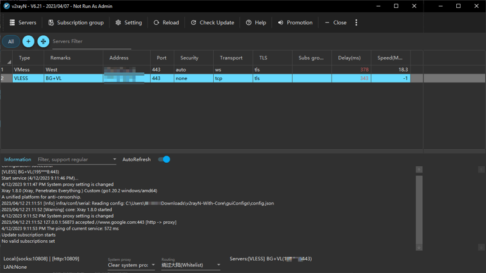
В качестве ядра по умолчанию используется последняя версия XRay, то есть поддерживаются Shadowsocks (включая 2022), VMess, VLESS, Trojan, и все фичи XTLS и uTLS. v2rayN может еще работать с V2Ray, Clash, ClashMeta, hysteria, naiveproxy в качестве ядра клиента - правда, для ядер отличных от V2Ray/XRay редактировать конфиги в GUI-окошках не получится, можно только подсунуть готовый текстовый конфиг.
Изначально клиент запускается на китайском языке, и нужно изловчиться переключить его на английский или русский:
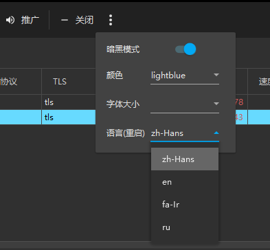
Активация или деактивация прокси осуществляется выбором режима в нижней части окна или при щелчке правой кнопкой мыши на иконке в трее: Set system proxy - активирует доступ через прокси, Clear system proxy - деактивирует:
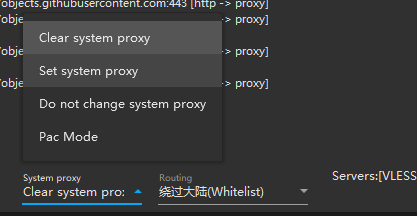
В TUN клиент, судя по всему, не умеет (если только вы не подсунете ему специально сгенерированный конфиг для Clash/ClashMeta/Sing-box).
Существует также вариант под названием ClashN - по сути дела, тот же v2rayN, но заточенный на работу с ядром Clash/ClashMeta.
https://github.com/yanue/V2rayU/tree/master
Старый клиент под Mac.
Основное взаимодействие с ним осуществляется через менюшку иконки в трее:
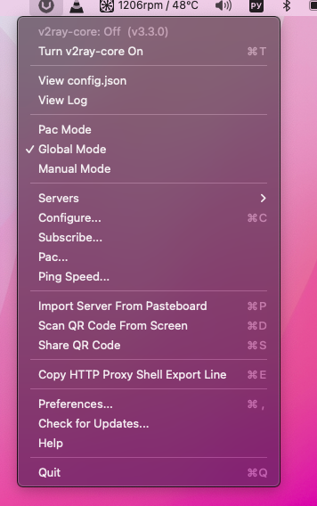
Поддерживает Shadowsocks (но не 2022!), VMess, VLESS, XTLS (но только старых версий, vision и reality в пролете), судя по всему не умеет менять TLS identity, TUN-режима тоже нет.
По какой-то причине автор удалил все исходники из дефолтной ветки на своем Github, поэтому будущее развитие проекта под вопросом.
https://github.com/Shadowsocks-NET/Qv2ray
Классический клиент на базе V2Ray и Qt. Имеет гордый слоган “For developers. By developers”. Кроссплатформенный: Windows, MacOS, Linux.
В одной Github-репе (https://github.com/Qv2ray/Qv2ray) лежит версия 2.7.0, в другой Github-репележит версия 2.7.0 и release candidate версии 3.0.0, и автор жалуется, что какие-то злые люди украли у него доступ от старой репы.
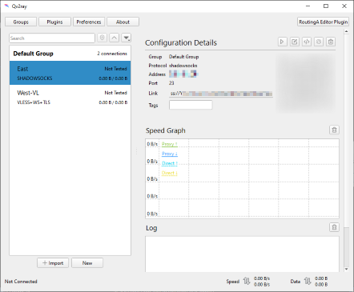
Клиент выглядит неплохо, если бы не одно НО - во-первых он поддерживает только то, что поддерживает классический V2Ray, а про XRay автор пишет “...No Such Word In My Dictionary”. А во-вторых, у меня он так и не заработал.
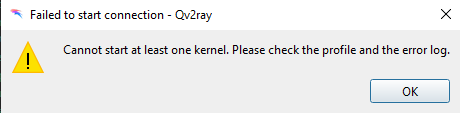
Для версии 2.7.0 нужно подсунуть по определенному пути бинарник v2ray, для версии 3.0.0 уже не надо (там есть встроенный V2Ray-плагин), но результат одинаковый - при настройке подключения (что ShadowSocks, что VLess) и попытке запустить прокси, клиент выплевывает ошибку, мол, извини, не получилось - причем вообще без каких-либо подробностей. Каких-дибо информации об ошибке не выводится, логов в окне не отображается, логов в файлах в папке с программой нет, включить логгирование в настройках каким-то образом нельзя. Тупик. Короче, не рекомендую.
https://github.com/Fndroid/clash_for_windows_pkg
https://github.com/zzzgydi/clash-verge
Clash for Windows - как следует из названия, работает на базе Clash, но как не следует из названия, работает не только под Windows, но и под macOS и Linux.
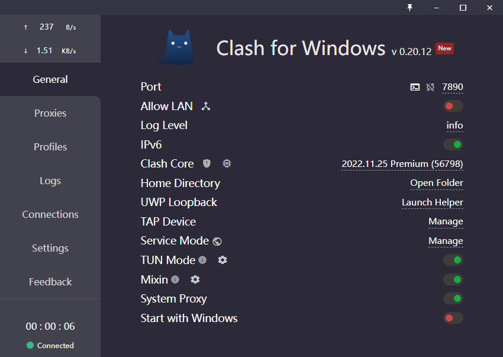
Конфиги принимает только в формате Clash, настроить сервер ручками через интерфейс нельзя, только вручную писать YAML-код.
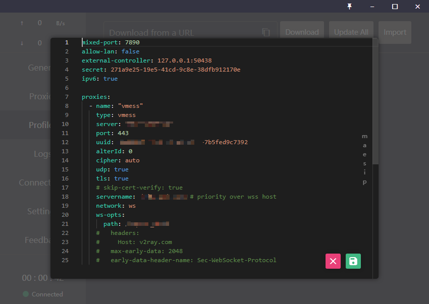
Clash for Windows написан на Electron, поэтому один только его дистрибутив в распакованном виде на диске занимает 277 мегабайт, и памяти жрет соответствующе.
Исходники закрыты, на Github лежат только бинари.
Но! Но… Есть также клон проекта под названием Clash Verge.
И он гораздо лучше. Написан на tauri (аналог Eleсtron, но с Rust и WebView2), благодаря чему он в пять раз менее жирный. Интерфейс сделан гораздо более аккуратно. В качестве ядра можно использовать не только Clash, но и Clash.Meta (что добавляет поддержку VLess и XTLS, включая Reality).
Если вам по каким-то причинам нравится или нужен Clash-based-клиент - то Clash-Verge не самый плохой вариант.
https://github.com/MatsuriDayo/nekoray
И самое вкусное на конец.
NekoRay, он же NekoBox. В качестве ядра может использовать сразу и v2ray и sing-box - нужную опцию можно выбрать в настройках, после этого клиент перезапускается, меняет свое имя в заголовке окна и немного изменяется интерфейс настроек в зависимости от выбранного ядра.
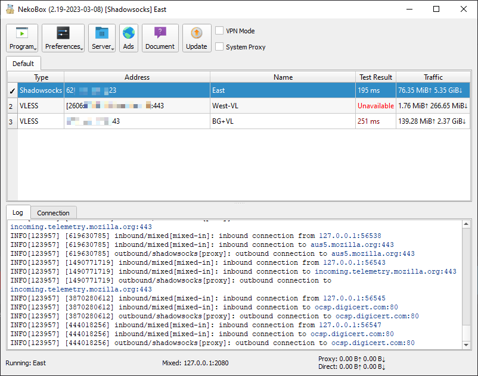
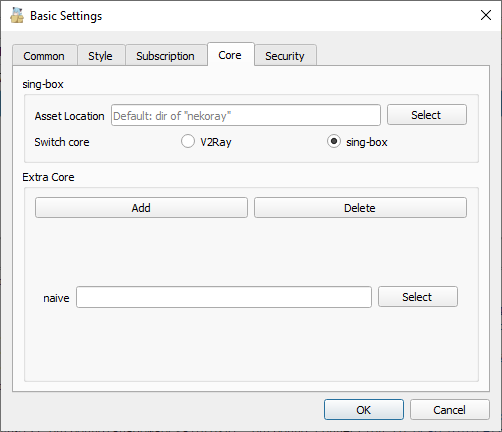
Написан на Qt, поэтому компактен, быстр и приятно выглядит, кроссплатформенный (Windows, MacOS, Linux).
Интерфейс действительно удобный: сервера можно группировать по вкладкам, сверху окна есть две простые галочки для активации режима системого прокси или TUN (тут оно называется VPN)
Выбранный сервер можно пошарить стандартной ссылкой или QR-кодом, а можно в формате Sing-box, что может быть удобно при обмене с клиентом Nekobox под Android (да, он там тоже есть!) и Sing-box для iOS.
Поддерживает все то что поддерживают V2Ray и Sing-box (Shadowsocks-2022, VMess, VLESS, Trojan, XTLS, uTLS, Hysteria и даже Wireguard и SSH). Даже если каких-то опций нет в интерфейсе, можно докидывать конфигурационные параметры ручками, например, чтобы активировать XTLS Vision, можно в настройках сервера нажать на “Custom JSON Settings” и добавить там соответствующую строчку.
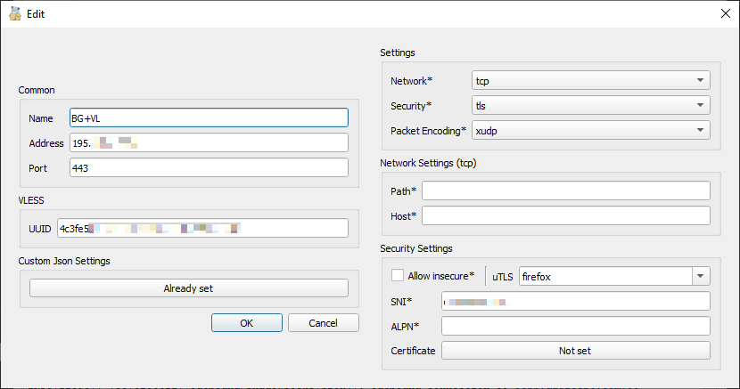
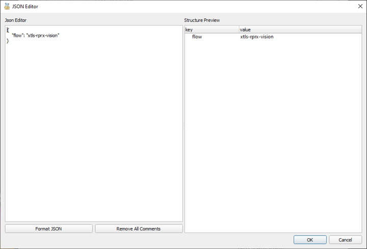
Благодаря этому можно использовать даже протоколы и фичи, которые не перечислены в UI Nekobox, но поддерживаются ядром Sing-box, например, можно настроить подключение по SSH и оно будет отображаться и работать точно так же как и другие сервера. Ещё можно подключать дополнительные cores, например, Naiveproxy.
На сегодняшний день, как по мне, самый функциональный, удобный и продуманный клиент для Windows/MacOS/Linux с графическим интерфейсом.
Лайфхак: в меню выбрать "Activate last server automatically", тогда нужный сервер будет автоматически выбираться при старте.
Буду краток - если вам нужен хороший и удобный кросс-платформенный клиент с поддержкой всего что нужно - используйте Nekobox (с ядром sing-box).
Если вы Windows-only-guy, интерфейс v2rayN вас не бесит, и не требуется каких-либо специальных фич типа TUN - можно использовать так же и v2rayN, почему бы и нет.
Если вам нравится Clash или нужны какие-то его специфичные фичи, то можно попробовать Clash-Verge с ядром Clash.Meta.
https://play.google.com/store/apps/details?id=com.v2ray.ang&hl=en_US
https://github.com/2dust/v2rayNG
Один из самых популярных Android-клиентов. XRay в качестве ядра. Соответственно, умеет в Shadowsocks, VMess, VLESS, Trojan и все остальное что умеет XRay, в том числе uTLS и XTLS. Версии в Google Play немного отстают, на Github лежат самые свежие APK - например, версия из Google Play пока еще не поддерживает XTLS-Reality, а APK-шка с гитхаба - уже да.
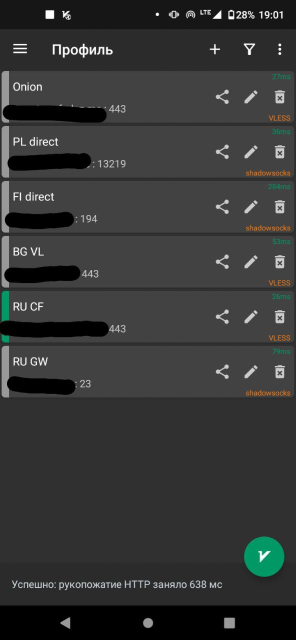
Единственная проблема: у меня v2rayNG почему-то не смог соединиться с сервером через VLESS + XTLS-Vision (и версия из стора, и самая новая с гитхаба). Без Vision все окей, с Vision - не работает. Причем наврядли проблема в настройках или в сервере, потому что другие клиенты с использоваием той же самой ссылки и того же QR-кода подключились к тому же серверу вполне нормально. Upd: Я еще немного покопал, и кажется понял. При установке uTLS как "android" подключение фейлится, при установке uTLS как "chrome" - все работает. Не совсем понятно, это баг на стороне v2RayNG или на стороне XRay, но баг интересный.
https://github.com/MetaCubeX/ClashMetaForAndroid
https://f-droid.org/packages/com.github.metacubex.clash.meta/
Android-клиент на базе Clash.Meta. В Google Play нет, есть APK на Github и в F-Droid.
Конфигурировать сервера в интерыфейсе нельзя, добавить через QR-код или ссылку тоже нельзя, можно только загрузить YAML-файл из файловой системы или с какого-нибудь сервера, естественно только в формате Clash.
Поэтому я работоспособность не тестировал, терпения не хватило возиться.
https://github.com/SagerNet/SagerNet
https://play.google.com/store/apps/details?id=moe.matsuri.lite
https://github.com/MatsuriDayo/Matsuri
SagerNet - клиент под Andorid написанный на Kotlin. Долгое время считался клиентом с самым большим количеством поддерживаемых протоколов и фич. На гитхабе проекта висит объявление о том, что проекту нужен новый ментейнер, последняя версия вышла почти пол года назад, и, например, до сих пор не поддерживает XTLS-Vision.
Matsuri - форк SagerNet (в чем именно различия не разбирался), но на странице проекта написано что проект “no longer active” и предлагается перейти на Nekobox, о котором будет в следущем параграфе.
https://play.google.com/store/apps/details?id=moe.nb4a
https://github.com/MatsuriDayo/NekoBoxForAndroid/releases
Тот самый Nekobox, про который уже писали выше в главе про десктопные клиенты, только под Android. Sing-box в качестве ядра, поддерживает все что нужно на сегодняшний день, в том числе XTLS-Vision (работает без проблем) и XTLS-Reality.
Интерфейс очень похож на SagerNet (автор до этого разрабатывал его форк Matsuri), все что надо под рукой и все работает.
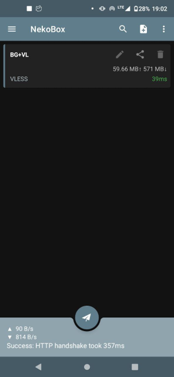
Что использовать на Android?
Тут ответ такой же, как и про декстопы - мне больше всего нравится Nekobox, он поддерживает всё что актуально на сегодняшний день и работает хорошо.
Если по какой-то причине не нравится, то всегда есть v2rayNG, который тоже популярный и умеет все что надо.
https://apps.apple.com/us/app/i2ray/id1445270056
Упоминаю этот клиент только потому что на него много где есть ссылки, в том числе на странице “Awesome V2Ray”. По факту клиент безнадежно устаревший: основан на старой версии V2Ray, умеет только в Shadowsocks и VMess, а во что-то более свежее типа VLESS, не говоря уж об XTLS - нет. Короче говоря, не стоит тратить время и деньги.
https://apps.apple.com/us/app/shadowrocket/id932747118
Один из старейших клиентов до сих пор на коне.
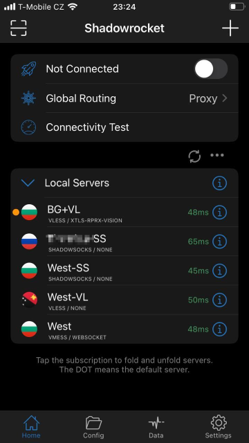
На каком ядре основан - не понятно, но поддерживает Shadowsocks (включая 2022), VMess, VLESS, Trojan, TUIC, Hysteria, WireGuard, умеет в XTLS-Vision (Reality пока еще нет, но будем надеяться что скоро). В отличие от многих других клиентов, настройки TLS fingerprint в окне параметров сервера нет, и можно подумать, что он клиент не поддерживает uTLS - но нет, все в порядке, просто оно настраивается там не индивидуально для каждого сервера, а в общих настройках приложения (и это даже логично).
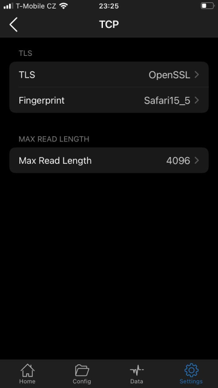
Работает даже на старых устройствах (с iOS <16). Работает без проблем. Своих денег (2.99$) однозначно стоит, но если хочется бесплатно - читайте дальше.
https://apps.apple.com/us/app/stash-rule-based-proxy/id1596063349
Тоже платный (3.99$). На базе Clash, поэтому особенности все те же, что и у Clash-клиентов: конфиг только из файла или из сети и только в формате Clash. Не совсем понятно, на базе Clash или Clash.Meta, поэтому есть вероятность что не умеет в VLESS и XTLS. Я не тестировал.
https://apps.apple.com/us/app/pharos-pro/id1456610173
Еще один платный клиент, но уже на базе Clash.Meta - то есть должен уметь в VLess и XTLS, заявляется даже поддержка XTLS-Reality. На сайте Hysteria утверждается, что подсунув ему правильный конфиг можно заставить его работать также и с Hysteria. Кроме чтения конфигов из файла и из сети позволяет еще отсканировать QR, но в моем случае почему-то, как и v2rayNG, не заработал с VLESS+XTLS-Vision. Поэтому я рекомендую переходить к следущему пункту :)
А вот это отличный клиент под iOS (версии не ниже 16) на базе XRay-core.
Умеет во всё то, что поддерживает свежий XRay-core: VLESS, Socks, VMess, Shadowsocks, Trojan поверх TCP, TLS, WebSocket, mKCP, gRPC, HTTP/2, QUIC. И да, свежая версия поддерживает XTLS, в том числе Reality.
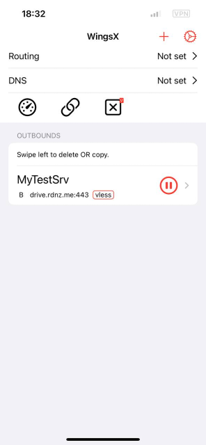
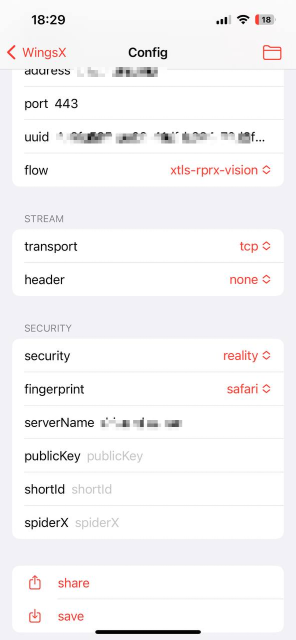
Заявлена поддержка форматов подписок v2rayN и Clash, поддержка формата QR-кодов v2rayNG, а также своего варианта для шэринга серверов со всеми настройками (включая правила и маршруты).
Приятный интерфейс. Работает без проблем. И бесплатный.
На сегодняшний день, пожалуй, самый лучший клиент для iOS. Кстати, Wings X есть и под десктопную macOS - я не тестировал, но надеюсь там тоже все замечательно.
Я думаю, вы уже поняли. Мой выбор - Wings X либо Shadowrocket, что больше понравится. Можно начать с первого, он бесплатный, а если по какой-то причине не подойдет или перестанет обновляться, то перейти на второй.
Сразу скажу - этот вопрос я глубоко не копал, ибо подходящего роутера под рукой нет, поэтому просто докину пару ссылок:
Luci-App-XRay - клиент под OpenWrt на базе XRay, умеет во все протоколы что должен уметь XRay (включая XTLS Vision и Reality), в качестве inbounds поддерживает HTTP/HTTPS/Socks прокси и прозрачный (TProxy). Ну и человекопонятный интерфейс для настройки.
OpenWRT-Passwall - популярный и много где упоминаемый набор инструментов, там есть и v2ray, и xray, и sing-box, и hysteria, и naiveproxy, и чего только еще нет.